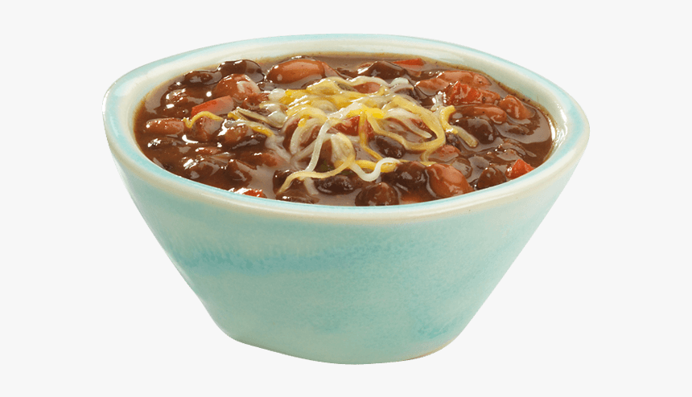

Chili Recipe!

Description
A delcious chili recipe that will make the whole family happy and is easy to make!
Ingredients
- 2 lb ground beef (80+)
- 1 large onion (1 cup)
- 2 cloves of garlic (finely chopped)
- 1 can of diced tomatoes
- 1 can of chili beans in sauce
- 1 can of tomato sauce
- 2 tablespoons of chili powder
- 1 1/2 teaspoons of ground cumin
- 1/2 teaspoon of salt
- 1/2 teaspoon of pepper
Steps
- Cook the beef and onion in skillet for 8-10 minutes or until brown, stirring occasionaly, drain.
- Drain mixture into slowcooker and mix in rest of Ingredients
- Cover and cook on low for 6 - 8 hours
- Enjoy!
Other tips!
You dont have to use beef! Feel free to use any other ground meat, a friend of mine likes to use venison and it is delcious!